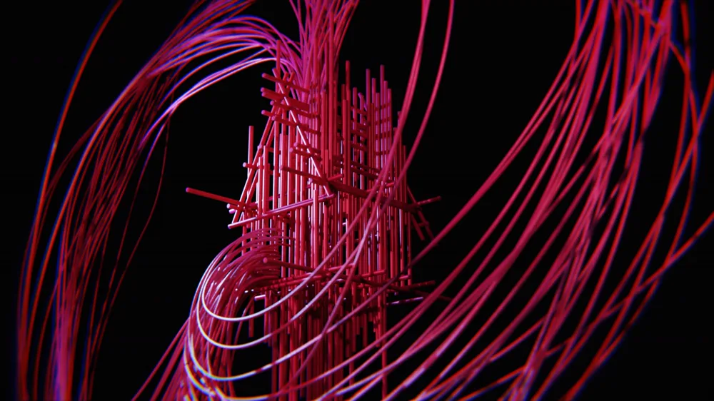
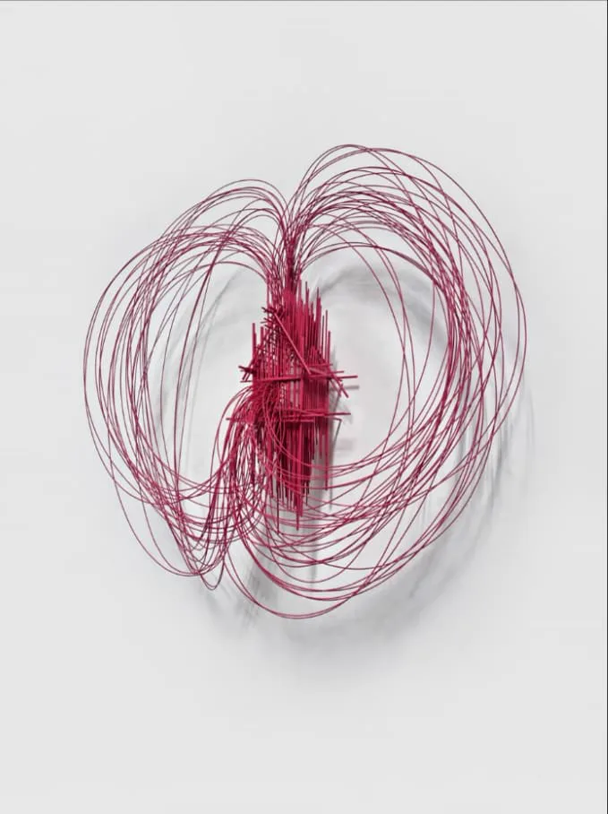
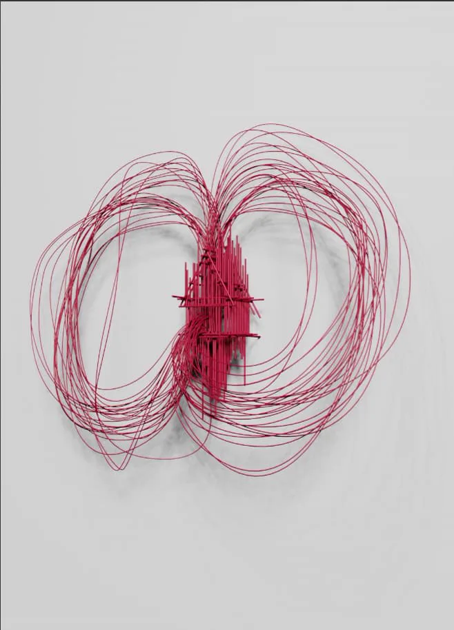
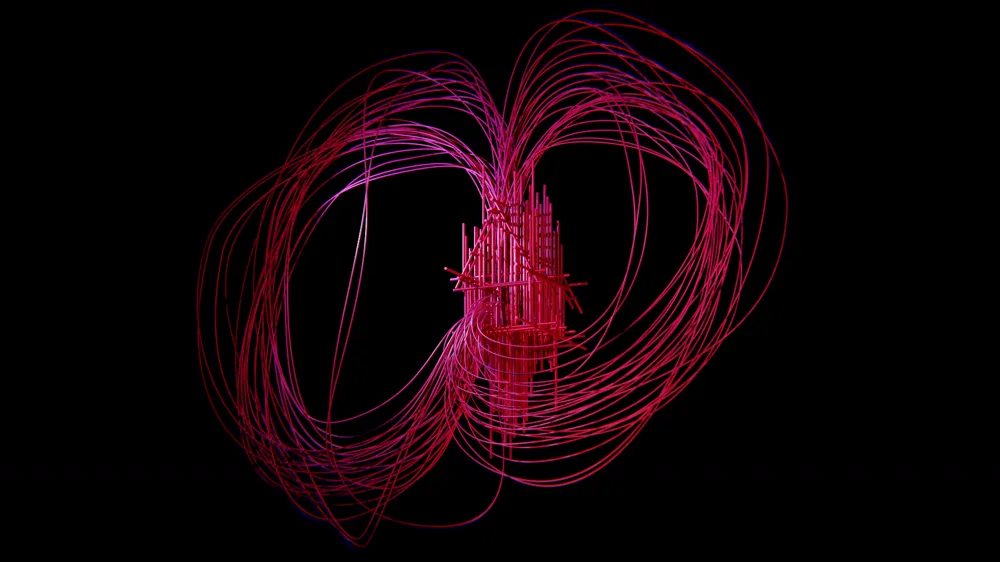
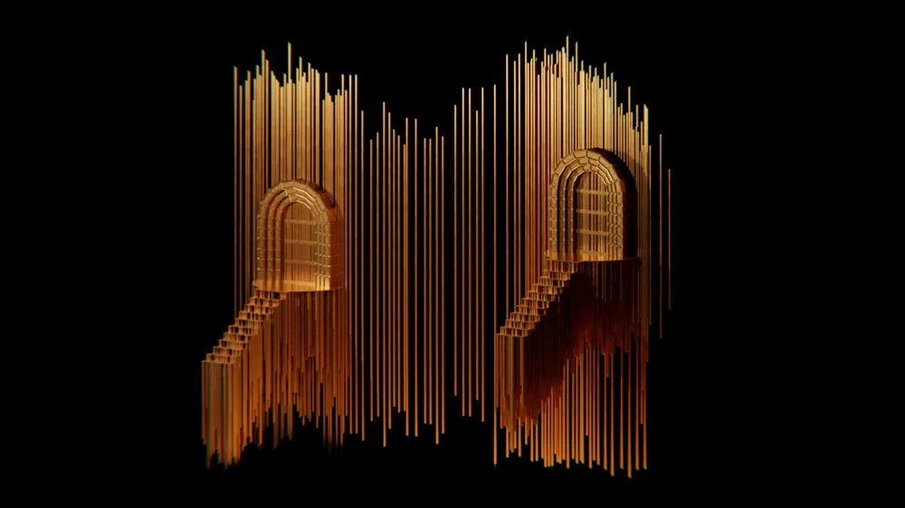
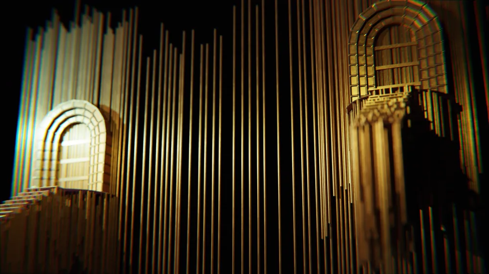

Live events
Peter Gabriel — i/o The Tour
3D replicas of two wire sculptures by Spanish artist David Moreno, made for the screens on Peter Gabriel's i/o tour in North America. One is the house Gabriel first commissioned for “This Is Home”; the other is Conexión de Catedral II, the piece he chose for the single's cover.

Original and replica
Moreno trained as an architect, and his sculptures look like architectural sketches drawn in piano wire that step out of the wall. From the front they read as clean line drawings, and from any other angle they open up into a tangle of lines. The replicas had to keep both of those qualities. Matched against a photo of the original, the 3D version is hard to tell apart.


The replicas
The aim was an immersive version of each sculpture that could be seen from any angle and distance, so the camera could travel around and through the wire on the big screens.


